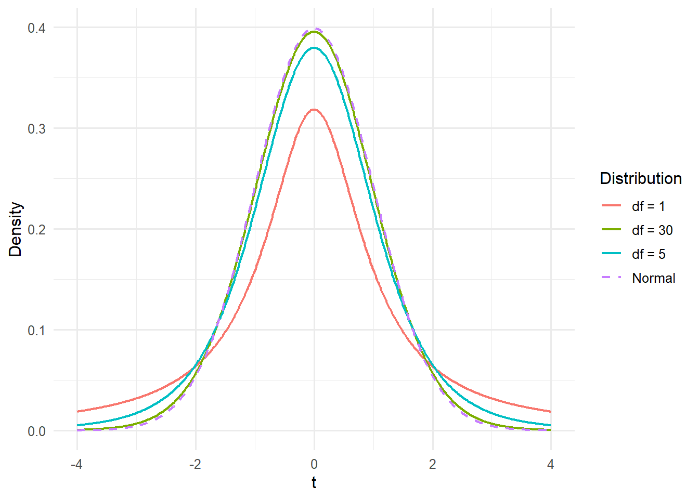

15 Small sample tests
The previous chapter introduced large-sample normal approximations. A sample size below 30 is often called small, but 30 is not a universal boundary. The \(t\), \(F\) and \(\chi^2\) distributions used here are also applicable to larger samples when their model assumptions hold. For small samples, those assumptions are especially important.
15.1 Tests based on Student’s t distribution (t-tests)
The \(t\)-distribution is a probability distribution used mainly for statistical inference when the sample size is small and the population standard deviation is unknown. It is similar to the normal distribution but has heavier tails. The distribution with different degrees of freedom is shown in Figure 15.1. As the degrees of freedom increase, the \(t\) distribution converges to the standard normal distribution. \(t\)-statistic can be calculated from the sample using formulas for different situations discussed below.
Assumptions of the t-test
The parent population from which the sample is drawn is normal.
The sample is a random sample, and the observations used as independent units are independent.
The population standard deviation \(\sigma\) is unknown.
For independent two-sample tests, observations must be independent both within and between the groups. For the paired test, the pairs must be independent and the normality assumption applies to the within-pair differences. Inspect the observations for strong skewness and unusual values, especially in small samples. If the assumptions are doubtful, a suitable transformation, a randomization test justified by the design, or an appropriate nonparametric method may be needed. Rank tests do not automatically test the same hypothesis about means.
15.1.1 Test for a single population mean
Consider a population with mean \(\mu\), where \(\mu\) is unknown. We take a random sample of size \(n\) from the population and calculate the sample mean \(\overline{x}\). We want to test whether the population mean \(\mu\) is equal to a known constant \(\mu_0\), based on the sample mean.
The null hypothesis to be tested is:
\(H_0\): \(\mu\) = \(\mu_0\)
The alternative hypothesis may be either:
\(H_1\): \(\mu\) < \(\mu_0\) (left-tailed alternative)
\(H_1\): \(\mu\) > \(\mu_0\) (right-tailed alternative)
\(H_1\): \(\mu\) \(\mathbf{\neq}\) \(\mu_0\) (two-tailed alternative)
The test statistic is:
\[t = \frac{\overline{x} - \mu_0}{\dfrac{s}{\sqrt{n}}} \tag{15.1}\]
where \(s^2 = \dfrac{\sum_{i=1}^{n}\left( x_i - \overline{x} \right)^2}{n - 1}\).
Under the null hypothesis, \(t\) follows a \(t\) distribution with \(n - 1\) degrees of freedom.
15.1.2 Decision rule for the t test
Let \(t\) be the calculated value, degrees of freedom = \(n - 1\), and \(\alpha\) be the level of significance. We reject the null hypothesis if:
\(|t| > t_{\alpha/2}\) ; for a two-tailed test
\(t > t_{\alpha}\) ; for a right-tailed test
\(t < -t_{\alpha}\) ; for a left-tailed test
Here \(t_{\alpha}\) or \(t_{\alpha/2}\) is obtained from the table of Student’s \(t\) distribution for the given degrees of freedom \(n - 1\) and level of significance \(\alpha\). Use the signed statistic for a one-tailed test and its absolute value for a two-tailed test, as specified above. Otherwise, we do not have enough evidence to reject it. You can see the t-table in Table D.1 of Appendix D
Example 15.1 Based on field experiments, a new variety of green gram is expected to give a yield of 12 quintals per hectare. The variety was tested on 10 randomly selected farmers’ fields. The yields (quintals per hectare) were recorded as 14.3, 12.6, 13.7, 10.9, 13.7, 12, 11.4, 12, 12.6, and 13.1. Do the results confirm the expectation?
Solution
Null hypothesis, \(H_0\): \(\mu\) = 12
Alternative hypothesis, \(H_1\): \(\mu\) \(\mathbf{\neq}\) 12 (two-tailed test)
Sample size (\(n\)) = 10
Sample mean, \(\overline{x}\) = \(\dfrac{\sum_{i=1}^{n} x_i}{n} = \dfrac{14.3 + 12.6 + \ldots + 13.1}{10} = \dfrac{126.3}{10} = 12.63\)
Sample standard deviation (\(s\)) = 1.0853
\(\mu_0\) = 12
Level of significance, \(\alpha\) = 0.05
The calculation of the sample mean and sample standard deviation is shown in Table 15.1.
| Sl No. | Yield | \(\left( \mathbf{x}_{\mathbf{i}} \mathbf{-} \overline{\mathbf{x}} \right)\) | \(\left( \mathbf{x}_{\mathbf{i}} \mathbf{-} \overline{\mathbf{x}} \right)^{\mathbf{2}}\) |
|---|---|---|---|
| 1 | 14.3 | 1.67 | 2.7889 |
| 2 | 12.6 | -0.03 | 0.0009 |
| 3 | 13.7 | 1.07 | 1.1449 |
| 4 | 10.9 | -1.73 | 2.9929 |
| 5 | 13.7 | 1.07 | 1.1449 |
| 6 | 12 | -0.63 | 0.3969 |
| 7 | 11.4 | -1.23 | 1.5129 |
| 8 | 12 | -0.63 | 0.3969 |
| 9 | 12.6 | -0.03 | 0.0009 |
| 10 | 13.1 | 0.47 | 0.2209 |
From Table 15.1, the sum of squared deviations is \(\sum_{i=1}^{n}\left( x_i - \overline{x} \right)^2 = 10.601\).
\[s^2 = \frac{\sum_{i=1}^{n}\left( x_i - \overline{x} \right)^2}{n-1} = \frac{10.601}{9} = 1.1779\]
\[s = \sqrt{1.1779} = 1.0853\]
The test statistic is:
\[t = \frac{\overline{x} - \mu_0}{\dfrac{s}{\sqrt{n}}} = \frac{12.63 - 12}{\dfrac{1.0853}{\sqrt{10}}}\]
\[= \frac{0.63}{0.3432} = 1.835\]
The table value of \(t\) for 9 degrees of freedom at the 5% level of significance (two-tailed) is 2.262 (see the Table D.1 in Appendix D).
Since the calculated value (1.835) is less than the table value (2.262), we do not have enough evidence to reject the null hypothesis. We conclude that there is insufficient evidence to say the mean differs from 12 quintals per hectare. The null hypothesis is not rejected; this does not establish that the expected mean is exactly correct.
Exercise 15.1 The mean weekly sales of soap bars in departmental stores were 146.3 bars per store. After an advertising campaign, the mean weekly sales in 22 stores for a typical week was 153.7, with a standard deviation of 17.2. Was the advertising campaign successful? (\(\alpha\) = 0.05)
15.2 Test for equality of two means
Let there be two normally distributed populations with means \(\mu_1\) and \(\mu_2\). Let the population standard deviations be unknown. Let samples of sizes \(n_1\) and \(n_2\) be taken from these populations, with sample means \(\overline{x}_1\) and \(\overline{x}_2\) respectively. We want to test whether the two population means are significantly different, based on the sample means.
There are two cases under this situation:
Population variances are equal. (Homogeneous variances)
Population variances are unequal. (Heterogeneous variances)
The pooled t-test assumes equal population variances. When this assumption is not justified, Welch’s t-test can be used without a preliminary F-test. Choosing a t-test solely from a preliminary variance test can distort its error rate; the choice should also reflect the study design and the plausibility of the assumptions.
When the population variances are equal (homogeneous)
The null hypothesis to be tested is:
\(H_0\): \(\mu_1\) = \(\mu_2\)
The alternative hypothesis may be either:
\(H_1\): \(\mu_1\) < \(\mu_2\) (left-tailed alternative)
\(H_1\): \(\mu_1\) > \(\mu_2\) (right-tailed alternative)
\(H_1\): \(\mu_1\) \(\mathbf{\neq}\) \(\mu_2\) (two-tailed alternative)
We calculate the test statistic \(t\) using the following formula:
\[t = \frac{\overline{x}_1 - \overline{x}_2}{s \sqrt{\dfrac{1}{n_1} + \dfrac{1}{n_2}}} \tag{15.2}\]
where \(s^2 = \dfrac{(n_1 - 1)s_1^2 + (n_2 - 1)s_2^2}{n_1 + n_2 - 2}\) is the pooled variance, and \(\overline{x}_1\) and \(\overline{x}_2\) are the sample means from populations 1 and 2 respectively.
Under the null hypothesis, \(t\) follows a \(t\) distribution with \(n_1 + n_2 - 2\) degrees of freedom. The decision rule is the same as for the previous t-test (see Section 15.1.2).
When the population variances are unequal
The Welch t-test is an adaptation of Student’s t-test. It is used to compare the means of two groups when the variances are different.
The null hypothesis to be tested is:
\(H_0\): \(\mu_1\) = \(\mu_2\)
The alternative hypothesis may be either:
\(H_1\): \(\mu_1\) < \(\mu_2\) (left-tailed alternative)
\(H_1\): \(\mu_1\) > \(\mu_2\) (right-tailed alternative)
\(H_1\): \(\mu_1\) \(\mathbf{\neq}\) \(\mu_2\) (two-tailed alternative)
We calculate the test statistic \(t\) using the following formula:
\[t = \frac{\overline{x}_1 - \overline{x}_2}{\sqrt{\dfrac{s_1^2}{n_1} + \dfrac{s_2^2}{n_2}}} \tag{15.3}\]
where \(s_1\) and \(s_2\) are the sample standard deviations from the two populations respectively.
The degrees of freedom of the Welch t-test are calculated as follows:
\[\text{df} = \frac{\left( \dfrac{s_1^2}{n_1} + \dfrac{s_2^2}{n_2} \right)^2}{\dfrac{s_1^4}{n_1^2 (n_1 - 1)} + \dfrac{s_2^4}{n_2^2 (n_2 - 1)}} \tag{15.4}\]
Once the \(t\) value is determined, read the critical value of Student’s \(t\) distribution from the table corresponding to the significance level. The decision rule is the same as for the previous t-test (see Section 15.1.2).
Example 15.2 Two independent random samples of yields from normal populations have \(n_1=8\), \(\overline{x}_1=24\), \(s_1^2=9\), and \(n_2=10\), \(\overline{x}_2=20\), \(s_2^2=16\). Yield is measured in quintals per hectare. Assuming equal population variances, test whether the population means differ at the 5% level.
Solution
Null hypothesis, \(H_0:\mu_1=\mu_2\).
Alternative hypothesis, \(H_1:\mu_1\neq\mu_2\) (two-tailed test).
The pooled variance is
\[s^2=\frac{7(9)+9(16)}{8+10-2}=12.9375.\]
Using Equation 15.2,
\[t=\frac{24-20}{\sqrt{12.9375}\sqrt{1/8+1/10}}=2.344.\]
The degrees of freedom are \(8+10-2=16\). The two-tailed 5% critical value is 2.120. Since \(2.344>2.120\), we reject \(H_0\). The population means differ significantly under the stated common-variance model. Equal population variances do not require the two sample variances to be numerically equal.
Example 15.3 Two independent random samples of plots gave the following results: \(n_1=10\), \(\overline{x}_1=25\), \(s_1=4\); \(n_2=12\), \(\overline{x}_2=21\), \(s_2=2\). Yield is measured in quintals per hectare. Assuming normal populations, test whether the population means differ at the 5% level without assuming equal variances.
Solution
Null hypothesis, \(H_0:\mu_1=\mu_2\).
Alternative hypothesis, \(H_1:\mu_1\neq\mu_2\) (two-tailed test).
Using Equation 15.3,
\[t=\frac{25-21}{\sqrt{16/10+4/12}}=2.877.\]
Using Equation 15.4,
\[\text{df}=\frac{(16/10+4/12)^2}{(16/10)^2/9+(4/12)^2/11} \approx12.69.\]
The two-tailed 5% critical value is approximately 2.166 and the p-value is approximately 0.0132. Since \(2.877>2.166\), we reject \(H_0\). The estimated difference is 4 quintals per hectare, with a higher mean in the first population. Software can use the fractional degrees of freedom directly. If only a printed table is available, using the next lower available degrees of freedom gives a conservative critical value.
Exercise 15.2 In order to compare the effectiveness of two sources of nitrogen, namely ammonium chloride and urea, on the grain yield of paddy, an experiment was conducted. Assume the treatments were allocated to independent groups of plots. The results on the grain yield of paddy (kg/plot) under the two treatments are given below. Test whether the two sources differ in effectiveness. (\(\alpha\) = 0.05)
Ammonium chloride: 13.4, 10.9, 11.2, 11.8, 14, 15.3, 14.2, 12.6, 17, 16.2, 16.5, 15.7
Urea: 12, 11.7, 10.7, 11.2, 14.8, 14.4, 13.9, 13.7, 16.9, 16, 15.6, 16
15.3 Paired t-test
The paired t-test is used to compare the means of two related samples, that is, when we have two values (a pair of values) for the same experimental unit. For example, suppose 20 cows receive a treatment for 3 months and the question is whether the treatment has an impact on milk yield. The milk yield of the 20 cows is measured before and after the treatment. This gives 20 values before treatment and 20 values after treatment. To test whether there is any significant difference between before and after, the paired t-test can be used, because the two sets of values being compared are related. We have a pair of values for each cow, one before and one after treatment.
The number \(n\) in this test is the number of pairs, not the total number of measurements. The differences should be independent between pairs and approximately normal for the exact small-sample test. Two samples of the same size are not paired unless there is a meaningful matching of their observations. In a before-and-after study without a suitable control, a significant change alone does not establish that the treatment caused it.
Suppose we have two correlated random samples \(x_1, x_2, \ldots, x_n\) and \(y_1, y_2, \ldots, y_n\). We want to test whether the two population means are significantly different.
The null hypothesis to be tested is:
\(H_0\): \(\mu_1\) = \(\mu_2\)
The alternative hypothesis may be either:
\(H_1\): \(\mu_1\) < \(\mu_2\) (left-tailed alternative)
\(H_1\): \(\mu_1\) > \(\mu_2\) (right-tailed alternative)
\(H_1\): \(\mu_1\) \(\mathbf{\neq}\) \(\mu_2\) (two-tailed alternative)
We calculate the test statistic \(t\) using the following formula:
\[t = \frac{\overline{d}}{\dfrac{s}{\sqrt{n}}} \tag{15.5}\]
where \(\overline{d} = \dfrac{\sum_{i=1}^{n} d_i}{n}\), \(d_i = x_i - y_i\), and \(s^2 = \dfrac{\sum_{i=1}^{n}\left( d_i - \overline{d} \right)^2}{n - 1}\).
Under the null hypothesis, \(t\) follows a \(t\) distribution with \(n - 1\) degrees of freedom. For a two-tailed test, we compare \(|t|\) with the critical value. The decision rule is the same as for the previous t-test (see Section 15.1.2).
Example 15.4 In an experiment, plots were divided into two equal parts. One part received soil treatment A and the second part received soil treatment B. Each plot was planted with sorghum. The sorghum yield (kg/plot) was observed as shown below. Test the effectiveness of the soil treatments on sorghum yield.
| Treatment A | 49 | 53 | 51 | 52 | 47 | 50 | 52 | 53 |
| Treatment B | 52 | 55 | 52 | 53 | 50 | 54 | 54 | 53 |
Solution
Null hypothesis, \(H_0\): \(\mu_1\) = \(\mu_2\) (there is no significant difference between the effects of the two soil treatments)
Alternative hypothesis, \(H_1\): \(\mu_1\) \(\mathbf{\neq}\) \(\mu_2\) (two-tailed test; there is a significant difference between the effects of the two soil treatments)
Level of significance, \(\alpha\) = 0.05
The calculation of the differences is shown in Table 15.2.
| Sl No. | \(\mathbf{A}\) | \(\mathbf{B}\) | \(\mathbf{d}_{\mathbf{i}} \mathbf{= A - B}\) | \(\mathbf{d}_{\mathbf{i}} \mathbf{-} \overline{\mathbf{d}}\) | \(\left( \mathbf{d}_{\mathbf{i}} \mathbf{-} \overline{\mathbf{d}} \right)^{\mathbf{2}}\) |
|---|---|---|---|---|---|
| 1 | 49 | 52 | -3 | -1 | 1 |
| 2 | 53 | 55 | -2 | 0 | 0 |
| 3 | 51 | 52 | -1 | 1 | 1 |
| 4 | 52 | 53 | -1 | 1 | 1 |
| 5 | 47 | 50 | -3 | -1 | 1 |
| 6 | 50 | 54 | -4 | -2 | 4 |
| 7 | 52 | 54 | -2 | 0 | 0 |
| 8 | 53 | 53 | 0 | 2 | 4 |
From Table 15.2, \(\sum_{i=1}^{8} d_i = -16\) and \(\sum_{i=1}^{8}\left( d_i - \overline{d} \right)^2 = 12\).
\[\overline{d} = \frac{\sum_{i=1}^{8} d_i}{n} = \frac{-16}{8} = -2\]
\[s^2 = \frac{\sum_{i=1}^{8}\left( d_i - \overline{d} \right)^2}{n-1} = \frac{12}{7} = 1.7143\]
\[s = \sqrt{1.7143} = 1.309\]
\[t = \frac{\overline{d}}{\dfrac{s}{\sqrt{n}}} = \frac{-2}{\dfrac{1.309}{\sqrt{8}}}\]
\[= \frac{-2}{0.4629} = -4.321\]
The table value of \(t\) for 7 degrees of freedom at the 5% level of significance is 2.365.
Since the calculated value \(|t|\) = 4.321 is greater than the table value (2.365), we reject the null hypothesis. We conclude that there is a significant difference between soil treatments A and B. Because \(d_i = A - B\) is negative on average, soil treatment B increases the yield of sorghum significantly.
Exercise 15.3 A certain stimulus administered to each of 12 patients resulted in the following increase in blood pressure: 5, 2, 8, -1, 3, 0, -2, 1, 5, 0, 4, 6. Can it be concluded that the stimulus is, in general, accompanied by an increase in blood pressure? (\(\alpha\) = 0.05)
15.4 Testing the significance of a correlation coefficient
Let paired observations follow a bivariate normal population with correlation coefficient \(\rho\). We want to test the null hypothesis that the population correlation coefficient is zero (\(\rho = 0\)). A t-test can be used for this purpose. If we reject the null hypothesis, we conclude that there is a significant correlation in the population (\(\rho \neq 0\)). If we do not have enough evidence to reject the null hypothesis, we conclude that there is no significant correlation.
The null hypothesis to be tested is:
\(H_0\): \(\rho\) = 0
The alternative hypothesis is:
\(H_1\): \(\rho\) \(\mathbf{\neq}\) 0 (two-tailed alternative)
The test statistic is:
\[t = \frac{r \sqrt{n - 2}}{\sqrt{1 - r^2}} \tag{15.6}\]
Under the null hypothesis, \(t\) follows a \(t\) distribution with \(n - 2\) degrees of freedom. For the two-tailed alternative, we reject the null hypothesis if \(|t|\) is greater than the table value corresponding to \(n - 2\) degrees of freedom and the level of significance \(\alpha\). In our case \(\alpha\) = 0.05. Under the stated bivariate normal model, this t-test for zero correlation is exact for any sample size \(n>2\).
Fisher’s Z-transformation provides a large-sample approximation useful for confidence intervals and tests involving correlation, including nonzero hypothesised correlations. It does not replace the exact zero-correlation t-test merely because \(n\geq30\). The sample correlation coefficient \(r\) is transformed as:
\[Z = \frac{1}{2} \ln\left( \frac{1 + r}{1 - r} \right) \tag{15.7}\]
Under the null hypothesis \(H_0: \rho = 0\), the statistic \(Z\sqrt{n - 3}\) follows approximately a standard normal distribution. The test statistic is therefore:
\[Z_{\text{cal}} = Z \sqrt{n - 3} \tag{15.8}\]
We reject the null hypothesis if \(|Z_{\text{cal}}|\) exceeds the table value of the standard normal distribution at the chosen level of significance (1.96 at the 5% level, two-tailed).
To test \(H_0:\rho=\rho_0\), where \(-1<\rho_0<1\), use
\[Z_{\text{cal}}=\left[Z-\frac12\ln\left(\frac{1+\rho_0}{1-\rho_0}\right)\right]\sqrt{n-3}.\]
An approximate \(100(1-\alpha)\%\) confidence interval on the transformed scale is \(Z\pm Z_{\alpha/2}/\sqrt{n-3}\). Convert each endpoint \(u\) back to the correlation scale using \((e^{2u}-1)/(e^{2u}+1)\). These approximations require independent pairs, a suitable bivariate normal model, \(n>3\) and enough observations for the approximation to be adequate. They are undefined at \(r=1\) or \(r=-1\). A significant Pearson correlation indicates a linear association; it does not establish causation, and a nonsignificant result does not rule out a nonlinear relationship.
Example 15.5 A plant breeder studied the relationship between plant height and grain yield in a sample of 18 rice genotypes and obtained a correlation coefficient of 0.6. Test whether the population correlation coefficient is significant.
Solution
Null hypothesis, \(H_0\): \(\rho\) = 0 (population correlation coefficient is zero)
Alternative hypothesis, \(H_1\): \(\rho\) \(\mathbf{\neq}\) 0 (population correlation coefficient is not zero)
Sample correlation coefficient (\(r\)) = 0.6
Number of pairs (\(n\)) = 18
Under the bivariate normal model, the following \(t\) statistic is used to test zero correlation:
\[t = \frac{r \sqrt{n - 2}}{\sqrt{1 - r^2}} = \frac{0.6 \sqrt{18 - 2}}{\sqrt{1 - 0.36}} = \frac{0.6 \times 4}{\sqrt{0.64}} = \frac{2.4}{0.8} = 3.00\]
\(t_{\text{cal}}\) = 3.00. The table value of \(t\) for \(n - 2 = 16\) degrees of freedom at the 5% level of significance (two-tailed) is 2.120. Since the calculated value is greater than the table value, we reject the null hypothesis and conclude that there is a significant correlation between plant height and grain yield.
15.5 Chi-square test (\(\chi^2\))
If \(Z_1,Z_2,\ldots,Z_\nu\) are independent standard normal variables, then \(\sum_{i=1}^{\nu}Z_i^2\) has a chi-square distribution with \(\nu\) degrees of freedom. It takes only nonnegative values, has mean \(\nu\) and variance \(2\nu\), and is positively skewed. The skewness decreases as the degrees of freedom increase.
Chi-square tests are based on the sampling distribution called the chi-square distribution (\(\chi^2\) distribution). The goodness-of-fit and independence tests for categorical counts are based on the following conditions:
The sample observations are independent.
The expected frequencies must be sufficiently large for the chi-square approximation; a total sample size greater than 50 is not a universal requirement.
A common introductory guideline is to have expected frequencies of at least 5. In a goodness-of-fit test, substantively appropriate adjacent categories may be combined, with degrees of freedom adjusted. In contingency tables, categories should not be combined merely to obtain significance; an exact or simulation-based test may be preferable for sparse data.
The constraints on the cell frequencies should be linear, for example \(\sum O_i = \sum E_i\), where \(O_i\) and \(E_i\) represent the observed and expected frequencies.
NoteNote
Chi-square goodness-of-fit and independence tests analyse categorical counts without assuming normally distributed measurements. They still require a specified probability model and suitable expected frequencies. In contrast, the chi-square test for a population variance is a parametric test requiring a normal population.
Degrees of freedom in \(\chi^2\) tests: Degrees of freedom refers to the number of independent variates that make up the statistic. In general, it is the total number of observations less the number of independent constraints imposed on the observations. For example, if \(k\) is the number of independent constraints in a set of data on \(n\) observations, then degrees of freedom = \(n - k\).
Three important chi-square tests are:
Chi-square test for goodness of fit.
Chi-square test for independence of attributes.
Chi-square test for a variance.
15.5.1 Chi-square test for goodness of fit
A very powerful test for the significance of the discrepancy between theory and experiment was given by Prof. Karl Pearson in 1900 and is known as the “\(\chi^2\) test for goodness of fit”. (Pearson 1900)
We want to test the null hypothesis:
\(H_0\): The population category probabilities follow the specified theoretical distribution.
against the alternative hypothesis:
\(H_1\): The population category probabilities do not follow the specified theoretical distribution.
If \(O_i\) (\(i = 1, 2, \ldots, n\)) is a set of observed frequencies and \(E_i\) (\(i = 1, 2, \ldots, n\)) is the corresponding set of expected (theoretical) frequencies, then Karl Pearson’s chi-square test statistic is:
\[\chi^2 = \sum_{i=1}^{n} \frac{\left( O_i - E_i \right)^2}{E_i} \tag{15.9}\]
Here \(O_i\) represents the \(i^{\text{th}}\) observed frequency and \(E_i\) the corresponding expected frequency according to the theory behind the data. Under the null hypothesis, the statistic approximately follows a chi-square distribution with \(n - 1\) degrees of freedom when there are \(n\) categories and no parameters are estimated from the data. When \(m\) parameters are estimated by an appropriate fitting method, the usual degrees of freedom are \(n-1-m\).
Decision rule for the goodness-of-fit test
Let \(\chi^2_{\text{cal}}\) be the calculated value and \(\alpha\) the level of significance. Use \(n-1\) degrees of freedom when all category probabilities are specified, or \(n-1-m\) when \(m\) parameters are estimated as described above. We reject the null hypothesis if \(\chi^2_{\text{cal}} > \chi^2_{\text{tab}}\), where \(\chi^2_{\text{tab}}\) is the table value of \(\chi^2\) at the appropriate degrees of freedom. For this goodness-of-fit test, the rejection region is in the right tail. The chi-square test for a population variance can instead be one-sided or two-sided, depending on its alternative.
Example 15.6 In plant genetics, our interest may be to test whether observed segregation ratios deviate significantly from Mendelian ratios. In such situations we test the agreement between observed and theoretical frequencies; such a test is called a test of goodness of fit. Parents of genetic constitution AAbb and aaBB produce an AaBb F1 generation. After selfing or intercrossing the F1, the F2 phenotypes are classified as follows:
| AB | Ab | aB | ab | Total |
| 87 | 29 | 32 | 12 | 160 |
They are expected to occur in a 9:3:3:1 ratio. Do the data agree with the theoretical ratio?
Solution
The calculation of the chi-square statistic is shown in Table 15.3.
| Phenotypes | AB | Ab | aB | ab | Total |
|---|---|---|---|---|---|
| Observed (Oi) | 87 | 29 | 32 | 12 | 160 |
| Expected (Ei) | 90 | 30 | 30 | 10 | 160 |
| \(\mathbf{O}_{\mathbf{i}}\mathbf{-}\mathbf{E}_{\mathbf{i}}\) | -3 | -1 | 2 | 2 | |
| \(\left( \mathbf{O}_{\mathbf{i}}\mathbf{-}\mathbf{E}_{\mathbf{i}} \right)^{\mathbf{2}}\) | 9 | 1 | 4 | 4 | |
| \(\frac{\left( \mathbf{O}_{\mathbf{i}}\mathbf{-}\mathbf{E}_{\mathbf{i}} \right)^{\mathbf{2}}}{\mathbf{E}_{\mathbf{i}}}\) | 0.1 | 0.033 | 0.133 | 0.4 | 0.667 |
\[\chi^2 = \sum_{i=1}^{n} \frac{\left( O_i - E_i \right)^2}{E_i} = 0.667\]
\(\chi^2_{\text{cal}}\) = 0.667. The table value of chi-square for \(4 - 1 = 3\) degrees of freedom at the 5% level of significance is 7.815. Since the calculated value is less than the table value, we do not reject the null hypothesis. There is insufficient evidence of departure from the 9:3:3:1 ratio; the test does not prove the ratio.
Exercise 15.4 The number of yeast cells counted in a haemocytometer is compared with the theoretical value given below. Does the experimental result support the theory? (\(\alpha = 0.05\))
| Yeast per cell | Observed Frequency | Expected Frequency |
|---|---|---|
| 0 | 103 | 106 |
| 1 | 143 | 141 |
| 2 | 98 | 93 |
| 3 | 42 | 41 |
| 4 | 8 | 14 |
| 5 | 6 | 5 |
| Total | 400 | 400 |
15.5.2 Chi-square test for independence of attributes
The chi-square test of independence checks whether two attributes are likely to be related. For example, chemical treatment and germination can be two attributes. If we want to know whether chemical treatment has any influence on germination, we can use the chi-square test. For this purpose, the data are arranged in the form of a contingency table.
Contingency table
A contingency table is a tabular representation of categorical data, consisting of a collection of cells containing counts. It usually shows frequencies for particular combinations of values of two discrete random variables \(X\) and \(Y\). Each cell represents a mutually exclusive combination of \(X\)-\(Y\) values. Let us consider two attributes \(A\) and \(B\), where \(A\) is divided into \(r\) classes \(A_1, A_2, \ldots, A_r\) and \(B\) into \(s\) classes \(B_1, B_2, \ldots, B_s\). The cell frequencies can be expressed in the form of an \(r \times s\) contingency table as shown in Table 15.4.
| A/B | \(A_1\) | \(A_2\) | . . . | \(A_r\) | Total |
|---|---|---|---|---|---|
| \(B_1\) | \((A_1\,B_1)\) | \((A_2\,B_1)\) | . . . | \((A_r\,B_1)\) | \((B_1)\) |
| \(B_2\) | \((A_1\,B_2)\) | \((A_2\,B_2)\) | . . . | \((A_r\,B_2)\) | \((B_2)\) |
| . | . | . | . | . | . |
| . | . | . | . | . | . |
| . | . | . | . | . | . |
| \(B_s\) | \((A_1\,B_s)\) | \((A_2\,B_s)\) | . . . | \((A_r\,B_s)\) | \((B_s)\) |
| Total | \((A_1)\) | \((A_2)\) | . . . | \((A_r)\) |
where, \((A_i B_j)\) = the number of items possessing both attributes \(A_i\) (\(i = 1, 2, \ldots, r\)) and \(B_j\) (\(j = 1, 2, \ldots, s\))
\((A_i)\) = the number of items possessing attribute \(A_i\) (\(i = 1, 2, \ldots, r\))
\((B_j)\) = the number of items possessing attribute \(B_j\) (\(j = 1, 2, \ldots, s\))
\(\sum (A_i) = \sum (B_j) = N\) is the total frequency.
Example 15.7 In order to determine the possible effect of a chemical treatment on the germination rate of cotton seeds, a pot culture experiment was conducted. The results are given below in the form of a 2 x 2 contingency table. (\(X\) = germination, \(Y\) = chemical treatment). Attribute \(X\) has two classes, \(X_1\) = germinated and \(X_2\) = not germinated. Attribute \(Y\) has two classes, \(Y_1\) = treated and \(Y_2\) = untreated.
| X/Y | Germinated(\(X_1\)) | Not Germinated(\(X_2\)) |
|---|---|---|
| Treated(\(Y_1\)) | 118 | 22 |
| Untreated(\(Y_2\)) | 120 | 40 |
The solution is worked out below.
Solution
\(H_0\): Germination of cotton seeds is independent of chemical treatment (the attributes are independent).
\(H_1\): Germination of cotton seeds depends on chemical treatment.
| X/Y | Germinated(\(X_1\)) | Not Germinated(\(X_2\)) | Total |
|---|---|---|---|
| Treated(\(Y_1\)) | 118 | 22 | 140 |
| Untreated(\(Y_2\)) | 120 | 40 | 160 |
| Total | 238 | 62 | 300 |
From the table, the row totals are \(R_1 = 140\) (treated) and \(R_2 = 160\) (untreated), and the column totals are \(C_1 = 238\) (germinated) and \(C_2 = 62\) (not germinated), with \(n = 300\). The expected frequency for each cell is \(E_{ij} = \dfrac{\text{(row total)} \times \text{(column total)}}{n}\):
\[E_{11} = \frac{140 \times 238}{300} = 111.07, \qquad E_{12} = \frac{140 \times 62}{300} = 28.93\]
\[E_{21} = \frac{160 \times 238}{300} = 126.93, \qquad E_{22} = \frac{160 \times 62}{300} = 33.07\]
\[ \begin{aligned} \chi^2 &= \sum \frac{(O - E)^2}{E}\\ &= \frac{(118-111.07)^2}{111.07} + \frac{(22-28.93)^2}{28.93}\\ &\quad + \frac{(120-126.93)^2}{126.93} + \frac{(40-33.07)^2}{33.07}\\ &= 3.93 \end{aligned} \]
\(\chi^2_{\text{cal}} = 3.93\). The table value of chi-square for \((2-1)(2-1) = 1\) degree of freedom at the 5% level of significance is 3.841. Since the calculated value is greater than the table value, we reject the null hypothesis and conclude that the chemical treatment significantly affects the germination rate of cotton seeds.
All four expected frequencies exceed 5, so the ordinary chi-square approximation is reasonable. Section 15.5.3.1 discusses the optional continuity correction and sparse tables. The analysis assumes independent seed outcomes; if treatment is assigned to pots and seeds within a pot are dependent, the pot must be accounted for as the experimental unit.
Expected frequencies
The expected frequency corresponding to each observed frequency \((A_i B_j)\) is calculated from the formula:
\[E_{ij} = \frac{(A_i)(B_j)}{N} \tag{15.10}\]
where \((A_i)\) is the total for class \(A_i\) and \((B_j)\) is the total for class \(B_j\) of the contingency table, and \(N\) is the grand total of all observations.
Degrees of freedom
Degrees of freedom for an \(r \times s\) contingency table = \((r - 1)(s - 1)\).
Test procedure
The null hypothesis to be tested is:
\(H_0\): The two attributes under consideration are independent.
The alternative hypothesis is:
\(H_1\): The two attributes under consideration are not independent.
The test statistic is:
\[\chi^2 = \sum_{i=1}^{r} \sum_{j=1}^{s} \frac{\left( O_{ij} - E_{ij} \right)^2}{E_{ij}} \tag{15.11}\]
where \(O_{ij}\) = observed frequencies, \(E_{ij}\) = expected frequencies, \(r\) = number of rows, and \(s\) = number of columns.
It can be verified that \(\sum_{i=1}^{r} \sum_{j=1}^{s} O_{ij} = \sum_{i=1}^{r} \sum_{j=1}^{s} E_{ij}\).
Under the null hypothesis, the test statistic approximately follows a chi-square distribution with \((r - 1)(s - 1)\) degrees of freedom. The decision rule is the same as for the goodness-of-fit test.
Example 15.8 In a survey, a random sample of 198 farms was classified into three classes according to tenure status (owned, rented, and mixed). They were also classified according to the level of soil fertility (high, moderate, and low). The results are given below. Test whether tenure status depends on soil fertility.
| Owned | Rented | Mixed | Total | |
| High | 40 | 12 | 10 | 62 |
| Moderate | 22 | 10 | 14 | 46 |
| Low | 22 | 26 | 42 | 90 |
| Total | 84 | 48 | 66 | 198 |
Solution
The expected value \(E_{ij}\) for each cell is calculated by multiplying the corresponding row total and column total and dividing by the grand total. The expected frequencies are shown in Table 15.6, and the calculation of the chi-square statistic is shown in Table 15.7.
| Owned | Rented | Mixed | |
|---|---|---|---|
| High | 26.3 | 15.0 | 20.7 |
| Moderate | 19.5 | 11.2 | 15.3 |
| Low | 38.2 | 21.8 | 30.0 |
| \(O_{ij}\) | \(E_{ij}\) | \(O_{ij} - E_{ij}\) | \(\left( O_{ij} - E_{ij} \right)^{2}\) | \(\frac{\left( O_{ij} - E_{ij} \right)^{2}}{E_{ij}}\) |
|---|---|---|---|---|
| 40 | 26.3 | 13.7 | 187.6 | 7.1 |
| 12 | 15 | -3 | 9.2 | 0.6 |
| 10 | 20.7 | -10.7 | 113.8 | 5.5 |
| 22 | 19.5 | 2.5 | 6.2 | 0.3 |
| 10 | 11.2 | -1.2 | 1.3 | 0.1 |
| 14 | 15.3 | -1.3 | 1.8 | 0.1 |
| 22 | 38.2 | -16.2 | 261.9 | 6.9 |
| 26 | 21.8 | 4.2 | 17.5 | 0.8 |
| 42 | 30 | 12 | 144 | 4.8 |
| \(\chi_{\text{cal}}^{2} =\) | 26.3 |
from Table 15.7 we obtain \(\chi^2_{\text{cal}}\) = 26.3. The table value of chi-square for \((3 - 1)(3 - 1) = 4\) degrees of freedom at the 5% level of significance is 9.488. Since the calculated value is greater than the table value, we reject the null hypothesis and conclude that the two attributes are not independent.
15.5.3 Chi-square test for a 2×2 contingency table
When the number of rows and columns are both equal to 2, the table is called a 2×2 contingency table. Consider two attributes \(A\) and \(B\) with classes \(A_1, A_2\) and \(B_1, B_2\) respectively, where \(a\), \(b\), \(c\), \(d\) are the frequencies in each cell.
| \(A_1\) | \(A_2\) | Row Total | |
|---|---|---|---|
| \(B_1\) | \(a\) | \(b\) | \(R_1 = a + b\) |
| \(B_2\) | \(c\) | \(d\) | \(R_2 = c + d\) |
| Column Total | \(C_1 = a + c\) | \(C_2 = b + d\) | \(n = a+b+c+d\) |
Here \(R_1, R_2\) and \(C_1, C_2\) are the row totals and column totals respectively, and \(n\) is the total number of observations.
The null hypothesis is \(H_0\): the two attributes are independent. The alternative hypothesis is \(H_1\): the two attributes are not independent.
For a 2×2 contingency table, \(\chi^2\) can be found directly using the shortcut formula:
\[\chi^2 = \frac{n\left( ad - bc \right)^2}{C_1 C_2 R_1 R_2} \tag{15.12}\]
Under the null hypothesis, the statistic approximately follows a chi-square distribution with \((2 - 1)(2 - 1) = 1\) degree of freedom.
Yates’ correction for continuity
Yates’ continuity correction is an optional adjustment to the chi-square approximation for a 2×2 table. Its use is not determined simply by an observed count being less than 5. Adequacy of the approximation depends on expected frequencies; Fisher’s exact test is an alternative for sparse tables. Pooling is generally inappropriate if it removes the scientific comparison of interest. The continuity-corrected statistic, with the correction capped to prevent a negative adjusted discrepancy, is:
\[\chi^2 = \frac{n\left[\max\left(0,\left|ad-bc\right|-\dfrac{n}{2}\right)\right]^2}{C_1 C_2 R_1 R_2} \tag{15.13}\]
Example 15.9 In a field trial to study the effect of a bio-pesticide on aphid infestation in okra, 50 plants were treated with the bio-pesticide and 50 were left untreated as controls. The number of plants showing aphid infestation was recorded, as shown below.
| Infested | Not infested | Total | |
|---|---|---|---|
| Treated | 4 | 46 | 50 |
| Untreated | 18 | 32 | 50 |
| Total | 22 | 78 | 100 |
\(H_0\): The bio-pesticide has no effect on aphid infestation (the attributes are independent).
\(H_1\): The bio-pesticide affects aphid infestation.
Here \(a = 4\), \(b = 46\), \(c = 18\), \(d = 32\), \(R_1 = 50\), \(R_2 = 50\), \(C_1 = 22\), \(C_2 = 78\), and \(n = 100\). The expected frequencies are 11 and 39 in each row, so a chi-square approximation is reasonable. Yates’ correction is applied here to illustrate the continuity-corrected calculation.
\[\chi^2 = \frac{100\left( \left| 4 \times 32 - 46 \times 18 \right| - \dfrac{100}{2} \right)^2}{22 \times 78 \times 50 \times 50}\]
\[= \frac{100\left( \left| 128 - 828 \right| - 50 \right)^2}{4{,}290{,}000} = \frac{100 \times 650^2}{4{,}290{,}000} = 9.85\]
\(\chi^2_{\text{cal}}\) = 9.85. The table value of chi-square for \((2 - 1)(2 - 1) = 1\) degree of freedom at the 5% level of significance is 3.841. Since the calculated value is greater than the table value, we reject the null hypothesis and conclude that the bio-pesticide significantly reduces aphid infestation in okra.
Exercise 15.5 In an experiment on the effect of a growth regulator on fruit setting in muskmelon, the following results were obtained. Test whether fruit setting in muskmelon and the application of the growth regulator are independent at the 5% level.
| Fruit set | Fruit not set | |
|---|---|---|
| Treated | 16 | 9 |
| Control | 4 | 21 |
15.5.4 Chi-square test for a population variance
Consider a normal population with mean \(\mu\) and variance \(\sigma^2\), where both are unknown. We take a random sample of size \(n\) from the population and want to test whether the population variance \(\sigma^2\) is equal to a known constant \(\sigma_0^2\), based on the sample variance.
Null hypothesis, \(H_0\): \(\sigma^2\) = \(\sigma_0^2\)
The alternative hypothesis may be \(H_1:\sigma^2>\sigma_0^2\), \(H_1:\sigma^2<\sigma_0^2\), or \(H_1:\sigma^2\neq\sigma_0^2\).
The test statistic is:
\[\chi^2 = \frac{(n - 1)s^2}{\sigma_0^2} \tag{15.14}\]
where \(s^2 = \dfrac{\sum_{i=1}^{n}\left( x_i - \overline{x} \right)^2}{n - 1}\) is the sample variance.
Under the null hypothesis, the test statistic follows a chi-square distribution with \(n-1\) degrees of freedom. This exact result requires independent observations from a normal population.
Let \(\chi^2_{\gamma,\nu}\) denote the critical value with probability \(\gamma\) to its right, for \(\nu=n-1\) degrees of freedom. The rejection rules are:
- For \(H_1:\sigma^2>\sigma_0^2\), reject if \(\chi^2>\chi^2_{\alpha,\nu}\).
- For \(H_1:\sigma^2<\sigma_0^2\), reject if \(\chi^2<\chi^2_{1-\alpha,\nu}\).
- For \(H_1:\sigma^2\neq\sigma_0^2\), reject below \(\chi^2_{1-\alpha/2,\nu}\) or above \(\chi^2_{\alpha/2,\nu}\).
The two-sided critical values are not symmetric because the chi-square distribution is not symmetric. For example, with \(n=15\), \(s^2=12.5\) and \(\sigma_0^2=10\), the statistic is \(14(12.5)/10=17.5\). At the two-sided 5% level, the critical values for 14 degrees of freedom are 5.629 and 26.119. Since 17.5 lies between them, we do not reject \(H_0\).
Exercise 15.6 Test the null hypothesis that \(\sigma^2\) = 0.16 against the alternative hypothesis \(\sigma^2\) > 0.16, given that \(s^2\) = 0.01719 for a random sample of size 11 from a normal population. (\(\alpha\) = 0.05)
15.6 F-test for equality of two population variances
If \(U\) and \(V\) are independent chi-square variables with \(\nu_1\) and \(\nu_2\) degrees of freedom, then \((U/\nu_1)/(V/\nu_2)\) has an \(F\) distribution. The numerator and denominator degrees of freedom must be stated in that order. The distribution takes positive values and is generally positively skewed. Interchanging the variances gives the reciprocal ratio and interchanges the degrees of freedom.
Let there be two normally distributed populations with variances \(\sigma_1^2\) and \(\sigma_2^2\) respectively. Let samples of sizes \(n_1\) and \(n_2\) be taken from these populations. We want to test whether the two population variances are significantly different, based on the sample variances.
Null hypothesis, \(H_0\): \(\sigma_1^2\) = \(\sigma_2^2\)
Alternative hypothesis, \(H_1\): \(\sigma_1^2\) \(\neq\) \(\sigma_2^2\)
With the population labels fixed in advance, the test statistic is:
\[F = \frac{s_1^2}{s_2^2} \tag{15.15}\]
For independent samples from normal populations, this ratio has an \(F\) distribution under \(H_0\), with \(n_1-1\) and \(n_2-1\) degrees of freedom.
The variance-ratio \(F\)-test is sensitive to departures from normality. For non-normal populations, Levene’s test or its median-based form is often more suitable for comparing variances. A large sample alone does not make the exact normal-population \(F\) test valid for arbitrary distributions.
Decision rule for the F-test
For the two-sided alternative, reject \(H_0\) if the ratio is below the lower \(\alpha/2\) critical value or above the upper \(\alpha/2\) critical value. If the larger sample variance is placed in the numerator for convenience, use the upper-tail \(\alpha/2\) critical value with degrees of freedom corresponding to the numerator and denominator samples. A pre-specified one-sided alternative uses the appropriate single tail at level \(\alpha\). The 5% upper-tail F-table is in Appendix E; a two-sided 5% test needs 2.5% upper-tail critical values.
Exercise 15.7 For a random sample from one normal population, \(n_1\) = 11 and \(s_1^2\) = 21.87. For another random sample from a second normal population, \(n_2\) = 8 and \(s_2^2\) = 15.36. Test the equality of variances. (\(\alpha\) = 0.05)
15.7 Confidence interval for a population mean
A significance test addresses a specified value of a population parameter. A confidence interval also shows the range of parameter values compatible with the data and the assumed model. For independent observations from a normal population with unknown standard deviation, a \(100(1-\alpha)\%\) confidence interval for the mean is
\[ \bar x\ \pm\ t_{\alpha/2,\,n-1}\frac{s}{\sqrt n}, \tag{15.16}\]
where \(t_{\alpha/2,\,n-1}\) is the upper-tail critical value. In Example 15.1, \(\bar x=12.63\), \(s=1.0853\) and \(n=10\). The 95% confidence interval is
\[12.63\pm2.262\frac{1.0853}{\sqrt{10}} \approx(11.85,\ 13.41)\text{ quintals per hectare}.\]
Because 12 lies within this interval, the corresponding two-sided 5% t-test does not reject \(\mu=12\). A 95% confidence procedure covers the fixed population mean in 95% of repeated samples under its assumptions; this is not a 95% probability assigned to the fixed mean after the interval has been calculated.
For two independent means, a confidence interval for \(\mu_1-\mu_2\) is
\[ (\overline{x}_1-\overline{x}_2)\pm t_{\alpha/2,\nu}\,\text{S.E.}.\]
For the pooled test, use \(\text{S.E.}=s\sqrt{1/n_1+1/n_2}\) and \(\nu=n_1+n_2-2\). For Welch’s test, use \(\text{S.E.}=\sqrt{s_1^2/n_1+s_2^2/n_2}\) and the degrees of freedom in Equation 15.4. For paired observations, the interval for the mean difference is \(\overline{d}\pm t_{\alpha/2,n-1}s/\sqrt{n}\), where \(s\) is the standard deviation of the differences. The pooled and paired intervals are exact under their normal models; the Welch interval is approximate.
In Example 15.3, the 95% confidence interval is \(4\pm2.166\sqrt{16/10+4/12}\), or approximately \((0.99,7.01)\) quintals per hectare. It excludes zero, agreeing with the two-sided test.
15.8 Choosing the appropriate test
For one mean with unknown population standard deviation, use the one-sample \(t\)-test. For two independent means, use the pooled test when a common variance is justified, or Welch’s test when it is not. For matched measurements, use the paired test on the differences. Equal sample sizes alone do not determine this choice.
For categorical counts, use goodness of fit to compare one classification with specified probabilities, and a contingency-table test to study association between two classifications. The same contingency-table calculation can compare category proportions across independently sampled groups; this is called a test of homogeneity. Each independent unit must contribute to only one cell. Paired binary observations require a paired method, such as McNemar’s test, rather than the ordinary independence test.
For one normal-population variance, use the chi-square variance test; for the ratio of two independent normal-population variances, use the \(F\)-test. These are different applications from chi-square tests on counts and from the ANOVA \(F\)-test discussed later.
For each test, report the statistic, degrees of freedom where applicable, p-value or critical value, and the conclusion in terms of the population parameter. Also report the estimated effect and a confidence interval where appropriate. Repeated testing of many hypotheses increases the chance of false rejections; a collection of treatment comparisons should be planned and analysed with an appropriate multiple-comparison procedure.
15.9 Chapter Summary
Fill in the blanks
Answers are given at the end of the chapter.
For a normal population with unknown variance, the standardised sample mean follows Student’s __________ distribution.
The degrees of freedom of a one-sample t-test are __________.
The two-sample t-test assuming equal population variances uses a __________ variance estimate.
The two-sample t-test that does not assume equal population variances is called __________ t-test.
The t-test based on within-pair differences is called the __________ t-test.
For \(n\) independent pairs, the paired t-test has __________ degrees of freedom.
For testing zero Pearson correlation under a bivariate normal model, the t-test has __________ degrees of freedom.
A test comparing observed and expected category frequencies is called a chi-square __________-of-fit test.
The expected cell frequency under independence equals the row total multiplied by the column total and divided by the __________ total.
The degrees of freedom for independence in an \(r\times s\) table are __________.
For a normal population, the variance test uses the __________ distribution.
The ratio of two independent sample variances from normal populations is tested using the __________ distribution.
Student was the pen name of William Sealy __________.
Short-answer questions
Define a small sample.
What is small sample theory?
State the assumptions of the \(t\)-test.
Explain why the \(t\) distribution is used when the population standard deviation is unknown.
State the null and alternative hypotheses for testing a single population mean.
Derive or explain the test statistic for a single population mean.
What are the degrees of freedom in a one-sample \(t\)-test?
State the decision rules for one-tailed and two-tailed \(t\)-tests.
Explain the test for equality of two means when the population variances are equal.
What is pooled variance?
Why is pooled variance used when population variances are assumed equal?
Explain the Welch \(t\)-test.
When should the Welch \(t\)-test be used?
Distinguish between the equal-variance \(t\)-test and Welch \(t\)-test.
What is a paired \(t\)-test?
Give an agricultural example where a paired \(t\)-test can be used.
Explain how paired observations are converted into differences.
State the test statistic for the paired \(t\)-test.
What are the degrees of freedom for a paired \(t\)-test?
Explain the test for the significance of a correlation coefficient.
State the null and alternative hypotheses for testing a correlation coefficient.
What are the degrees of freedom for testing the significance of a correlation coefficient?
Define the chi-square distribution.
State the assumptions of the chi-square test.
Distinguish chi-square tests for categorical counts from the chi-square test for a normal population variance.
What is meant by degrees of freedom in a chi-square test?
List the three important chi-square tests discussed in the chapter.
Explain the chi-square goodness-of-fit test.
State the null and alternative hypotheses for the goodness-of-fit test.
Explain the difference between observed and expected frequencies.
State the degrees of freedom for the chi-square goodness-of-fit test.
Explain the chi-square test of independence.
What is a contingency table?
Explain how expected frequencies are calculated in a contingency table.
State the degrees of freedom for an \(r\times s\) contingency table.
Explain the chi-square test for a 2×2 contingency table.
State the shortcut formula for a 2×2 contingency table.
What is Yates’ correction for continuity?
When is Yates’ correction applied?
Explain the chi-square test for a population variance.
State the assumptions required for testing a population variance using chi-square.
What is an \(F\)-test?
Explain the procedure for testing equality of two population variances.
Why is the larger sample variance placed in the numerator in an \(F\)-test?
State the degrees of freedom of the \(F\) distribution used in the test.
Distinguish between \(t\), \(\chi^2\), and \(F\) distributions.
Explain the historical contribution of William Sealy Gosset to small-sample statistics.
Numerical and conceptual questions
Answers are given at the end of the chapter.
A new variety of green gram is expected to produce 12 quintals per hectare. A random sample of 10 farmers’ fields gives yields of 14.3, 12.6, 13.7, 10.9, 13.7, 12, 11.4, 12, 12.6, and 13.1 quintals per hectare. Test whether the results confirm the expectation at \(\alpha=0.05\).
The mean weekly sales of soap bars before an advertising campaign was 146.3 bars per store. After the campaign, the mean weekly sales in 22 stores was 153.7 with standard deviation 17.2. Test whether the advertising campaign was successful at \(\alpha=0.05\).
Two sources of nitrogen, ammonium chloride and urea, were compared for paddy grain yield. Test whether the two sources differ in effectiveness at \(\alpha=0.05\) using the data given in the chapter.
State the variance assumption of the pooled two-sample t-test. Explain when Welch’s t-test is appropriate and whether a preliminary F-test is required.
Two related treatments are applied to the same experimental units. Explain why an ordinary two-sample \(t\)-test is not appropriate and why a paired \(t\)-test should be used.
Soil treatments A and B gave paired yields of 49, 53, 51, 52, 47, 50, 52, 53 and 52, 55, 52, 53, 50, 54, 54, 53 kg/plot, respectively. Test whether the treatments differ significantly at \(\alpha=0.05\).
A stimulus administered to each of 12 patients produced changes in blood pressure of 5, 2, 8, -1, 3, 0, -2, 1, 5, 0, 4, and 6. Test whether the stimulus is associated with an increase in blood pressure at \(\alpha=0.05\).
A correlation coefficient of 0.2 is obtained from 625 pairs of observations. Test whether the population correlation coefficient is significant.
A genetic cross produces observed frequencies 87, 29, 32, and 12 for four phenotypic classes. Test whether the observations agree with the theoretical 9:3:3:1 ratio at \(\alpha=0.05\).
Observed frequencies of yeast cells are 103, 143, 98, 42, 8, and 6, while the corresponding expected frequencies are 106, 141, 93, 41, 14, and 5. Test the goodness of fit at \(\alpha=0.05\).
A survey classifies farms according to tenure status and soil fertility. Test whether tenure status and soil fertility are independent using the contingency table given in the chapter.
For a 2×2 contingency table with frequencies \(a\), \(b\), \(c\), and \(d\), derive the shortcut formula for the chi-square statistic.
Distinguish between observed and expected cell frequencies when assessing a chi-square approximation. Explain the roles of Yates’ correction and Fisher’s exact test in a 2×2 table.
Test the null hypothesis \(\sigma^2=0.16\) against the alternative \(\sigma^2>0.16\) when \(s^2=0.01719\) and \(n=11\) at \(\alpha=0.05\).
Two samples from normal populations have \(n_1=11\), \(s_1^2=21.87\), \(n_2=8\), and \(s_2^2=15.36\). Test the equality of population variances at \(\alpha=0.05\).
A sample of 15 observations has sample variance 12.5. Test whether the population variance is 10 at the 5% level using the appropriate chi-square test.
Two independent samples have sample variances 25 and 16. Explain which variance should be placed in the numerator of the \(F\) statistic and why.
A sample correlation coefficient is \(r=0.35\) based on 20 pairs of observations. Test whether the population correlation coefficient is significantly different from zero at \(\alpha=0.05\).
A sample of 12 observations has mean 25 and standard deviation 4. Test whether the population mean is 22 at \(\alpha=0.05\).
Two independent small samples have equal population variances. Explain which \(t\)-test should be used and state its degrees of freedom.
Important formulae
Sample variance:
\[ s^2=\frac{\sum_{i=1}^{n}(x_i-\bar{x})^2}{n-1} \]
One-sample \(t\) statistic:
\[ t=\frac{\bar{x}-\mu_0}{s/\sqrt{n}} \]
Degrees of freedom for one-sample \(t\)-test:
\[ df=n-1 \]
Pooled variance:
\[ s^2=\frac{(n_1-1)s_1^2+(n_2-1)s_2^2}{n_1+n_2-2} \]
Two-sample \(t\) statistic for equal variances:
\[ t=\frac{\bar{x}_1-\bar{x}_2}{s\sqrt{\frac{1}{n_1}+\frac{1}{n_2}}} \]
Degrees of freedom for equal-variance two-sample \(t\)-test:
\[ df=n_1+n_2-2 \]
Welch \(t\) statistic:
\[ t=\frac{\bar{x}_1-\bar{x}_2}{\sqrt{\frac{s_1^2}{n_1}+\frac{s_2^2}{n_2}}} \]
Welch degrees of freedom:
\[ df=\frac{\left(\frac{s_1^2}{n_1}+\frac{s_2^2}{n_2}\right)^2}{\frac{s_1^4}{n_1^2(n_1-1)}+\frac{s_2^4}{n_2^2(n_2-1)}} \]
Paired difference:
\[ d_i=x_i-y_i \]
Mean paired difference:
\[ \bar{d}=\frac{\sum_{i=1}^{n}d_i}{n} \]
Variance of paired differences:
\[ s^2=\frac{\sum_{i=1}^{n}(d_i-\bar{d})^2}{n-1} \]
Paired \(t\) statistic:
\[ t=\frac{\bar{d}}{s/\sqrt{n}} \]
Degrees of freedom for paired \(t\)-test:
\[ df=n-1 \]
Test statistic for significance of correlation coefficient:
\[ t=\frac{r\sqrt{n-2}}{\sqrt{1-r^2}} \]
Degrees of freedom for correlation test:
\[ df=n-2 \]
Chi-square goodness-of-fit statistic:
\[ \chi^2=\sum_{i=1}^{n}\frac{(O_i-E_i)^2}{E_i} \]
Degrees of freedom for goodness-of-fit test:
\[ df=n-1-m \]
Here \(n\) is the number of categories and \(m\) is the number of parameters estimated from the data; use \(m=0\) when all probabilities are specified.
Expected frequency in an \(r\times s\) contingency table:
\[ E_{ij}=\frac{(A_i)(B_j)}{N} \]
Chi-square test of independence:
\[ \chi^2=\sum_{i=1}^{r}\sum_{j=1}^{s}\frac{(O_{ij}-E_{ij})^2}{E_{ij}} \]
Degrees of freedom for an \(r\times s\) contingency table:
\[ df=(r-1)(s-1) \]
Chi-square statistic for a 2×2 contingency table:
\[ \chi^2=\frac{n(ad-bc)^2}{C_1C_2R_1R_2} \]
Yates’ corrected chi-square statistic:
\[ \chi^2=\frac{n[\max(0,|ad-bc|-n/2)]^2}{C_1C_2R_1R_2} \]
Chi-square test statistic for population variance:
\[ \chi^2=\frac{(n-1)s^2}{\sigma_0^2} \]
Degrees of freedom for chi-square variance test:
\[ df=n-1 \]
\(F\) statistic:
\[ F=\frac{s_1^2}{s_2^2} \]
Degrees of freedom for \(F\) test:
\[ df_1=n_1-1,\qquad df_2=n_2-1 \]
Quick revision
- Small sample → often described as \(n<30\), but this is not a universal boundary.
- Small sample theory → study of sampling distributions for small samples.
- Important small-sample distributions → \(t\), \(\chi^2\), and \(F\).
- Student’s \(t\)-test → used mainly for small samples when \(\sigma\) is unknown.
- Exact one-sample \(t\)-test → independent random observations from a normal population with unknown standard deviation.
- One-sample \(t\)-test → tests a population mean against a specified value.
- One-sample \(t\) degrees of freedom → \(n-1\).
- Two-sample \(t\)-test → compares two population means.
- Equal variances → use pooled variance.
- Equal-variance two-sample \(t\) degrees of freedom → \(n_1+n_2-2\).
- Unequal variances → use Welch’s \(t\)-test.
- Welch’s \(t\)-test uses separate sample variance terms.
- Welch’s degrees of freedom are generally not an integer and are calculated using the Welch-Satterthwaite formula.
- Paired \(t\)-test → compares two related observations.
- Examples of paired data → before and after measurements on the same experimental unit.
- Paired \(t\)-test is performed on the differences within pairs.
- Paired \(t\) degrees of freedom → \(n-1\).
- Correlation test → tests whether the population correlation coefficient is zero.
- For the correlation test, \(H_0:\rho=0\).
- Correlation test degrees of freedom → \(n-2\).
- Chi-square tests → based on the chi-square distribution.
- Chi-square tests for categorical counts differ from the parametric variance test for a normal population.
- Important chi-square tests → goodness of fit, independence of attributes, and population variance.
- Goodness-of-fit test → compares observed and expected frequencies.
- Goodness-of-fit null hypothesis → category probabilities follow the specified distribution.
- Goodness-of-fit test is right-tailed.
- Goodness-of-fit degrees of freedom → \(n-1\) when no parameter is estimated.
- Independence test → determines whether two attributes are independent.
- Contingency table → arrangement of frequencies for combinations of categorical attributes.
- Expected frequency → row total × column total ÷ grand total.
- \(r\times s\) contingency table degrees of freedom → \((r-1)(s-1)\).
- 2×2 contingency table degrees of freedom → 1.
- Yates’ correction → optional continuity adjustment for a 2×2 chi-square approximation; assess expected frequencies and consider an exact test for sparse data.
- Population variance test → tests a specified value of \(\sigma^2\).
- Chi-square variance statistic → \(\frac{(n-1)s^2}{\sigma_0^2}\).
- \(F\)-test → tests equality of two population variances.
- Placing the larger sample variance first is a convenience for a two-sided F-test with upper-tail area \(\alpha/2\).
- With the larger variance in the numerator, \(F\geq1\); with fixed labels, \(F\) may be less than 1.
- \(F\) degrees of freedom → \(n_1-1\) and \(n_2-1\).
- In hypothesis testing, compare the calculated statistic with the appropriate table value.
- For a two-tailed \(t\)-test → reject \(H_0\) when \(|t|\) exceeds the critical value.
- For a right-tailed \(t\)-test → reject \(H_0\) when \(t\) exceeds the critical value.
- For a left-tailed \(t\)-test → reject \(H_0\) when \(t\) is less than the negative critical value.
- Goodness-of-fit and independence tests use the upper chi-square tail; a variance test may be one-sided or two-sided.
- For a two-sided F-test → use both \(\alpha/2\) tails, or the equivalent larger-variance ratio with an upper \(\alpha/2\) cutoff.
- William Sealy Gosset developed the \(t\) distribution and published under the name “Student”.
- Student’s \(t\) distribution has heavier tails than the normal distribution.
Answers to fill in the blanks
1. \(t\) 2. \(n-1\) 3. Pooled 4. Welch’s 5. Paired 6. \(n-1\) 7. \(n-2\) 8. Goodness 9. Grand 10. \((r-1)(s-1)\) 11. Chi-square 12. \(F\) 13. Gosset
Solutions to numerical and conceptual questions
Given \(n=10\), \(\bar{x}=12.63\), \(s=1.0853\), \(\mu_0=12\). Using Equation 15.1, \(t=\frac{12.63-12}{1.0853/\sqrt{10}}=1.835\), with \(df=9\). At \(\alpha=0.05\) (two-tailed), the table value is 2.262; since \(|1.835|<2.262\), we do not reject \(H_0\). There is insufficient evidence that the mean yield differs from 12 quintals per hectare.
Given \(n=22\), \(\bar{x}=153.7\), \(s=17.2\), \(\mu_0=146.3\). To test whether the campaign was successful, \(H_0:\mu=146.3\) and \(H_1:\mu>146.3\) (right-tailed). Using Equation 15.1, \(t=\frac{153.7-146.3}{17.2/\sqrt{22}}\approx2.02\), with \(df=21\). At \(\alpha=0.05\), the one-tailed critical value is approximately 1.721; since \(2.02>1.721\), we reject \(H_0\). There is significant evidence that the mean weekly sales after the campaign exceeds the benchmark of 146.3. This comparison alone does not establish that the campaign caused the increase.
The two treatments are applied to independent groups. Welch’s t-test, Equation 15.3, does not require equal population variances. From Exercise 15.2, the sample means are 14.0667 and 13.9083 kg/plot. The Welch statistic is \(t=0.1846\), with approximately 21.995 degrees of freedom and a two-sided p-value of 0.8552. We do not reject equality of population means at the 5% level.
The pooled t-test assumes equal population variances; Welch’s t-test does not. A preliminary F-test is not required for Welch’s test. Failure to reject a variance test does not establish equal variances.
When two observations are obtained from the same experimental unit, the observations are related and are not independent, so the analysis should focus on the within-unit differences rather than treating the two sets as independent samples. The paired \(t\)-test is appropriate because it tests whether the mean paired difference is significantly different from zero.
For each plot, \(d_i=A_i-B_i\), giving \(\bar{d}=-2\) and \(s=1.309\). Using Equation 15.5, \(t=\frac{-2}{1.309/\sqrt{8}}=-4.321\), with \(df=7\). At \(\alpha=0.05\), the two-tailed critical value is 2.365; since \(|-4.321|>2.365\), we reject \(H_0\). There is a significant difference between treatments A and B; since \(\bar{d}\) is negative, treatment B produced the higher mean yield.
Let \(d\) denote the change in blood pressure, so \(H_0:\mu_d=0\) and \(H_1:\mu_d>0\). The observed differences are \(5,2,8,-1,3,0,-2,1,5,0,4,6\), with mean \(\bar{d}=\frac{31}{12}=2.583\) and sample standard deviation \(s=3.088\). Using Equation 15.5, \(t=\frac{2.583}{3.088/\sqrt{12}}\approx2.90\), with \(df=11\). At \(\alpha=0.05\) for a one-tailed test, the critical value is approximately 1.796; since \(2.90>1.796\), we reject \(H_0\). There is significant evidence that the stimulus is associated with an increase in blood pressure.
Given \(r=0.2\), \(n=625\), so \(H_0:\rho=0\) and \(H_1:\rho\neq0\). Using Equation 15.6, \(t=\frac{0.2\sqrt{623}}{\sqrt{1-0.2^2}}=5.095\), with \(df=623\). At the 5% level, the critical value is approximately 1.96; since \(5.095>1.96\), we reject \(H_0\). There is a significant correlation in the population.
The observed frequencies are \(87,29,32,12\) with expected ratio \(9:3:3:1\) and \(N=160\), giving expected frequencies \(90,30,30,10\). Using Equation 15.9, \(\chi^2=\sum\frac{(O-E)^2}{E}=0.667\), with \(df=3\). At \(\alpha=0.05\), \(\chi^2_{0.05,3}=7.815\); since \(0.667<7.815\), we do not reject \(H_0\). The observed data agree with the theoretical 9:3:3:1 ratio.
Using Equation 15.9 with the given observed and expected frequencies, \(\chi^2=\frac{(103-106)^2}{106}+\frac{(143-141)^2}{141}+\frac{(98-93)^2}{93}+\frac{(42-41)^2}{41}+\frac{(8-14)^2}{14}+\frac{(6-5)^2}{5}\approx3.18\), with \(df=5\). At \(\alpha=0.05\), the critical value is approximately 11.070; since \(3.18<11.070\), we do not reject \(H_0\). The observed frequencies do not differ significantly from the expected frequencies.
\(H_0\): the two attributes are independent; \(H_1\): the two attributes are not independent. Using Equation 15.10 for each cell, the calculated chi-square value given in the chapter is \(\chi^2_{\text{cal}}=26.3\). The table value at 4 degrees of freedom and \(\alpha=0.05\) is \(\chi^2_{\text{tab}}=9.488\); since \(26.3>9.488\), we reject \(H_0\). Tenure status and soil fertility are not independent.
For a 2×2 table with cell frequencies \(a\), \(b\), \(c\), \(d\) and total \(n\), Equation 15.12 gives \(\chi^2=\frac{n(ad-bc)^2}{C_1C_2R_1R_2}\), where \(R_1,R_2\) are the row totals and \(C_1,C_2\) are the column totals. The degrees of freedom are \(df=(2-1)(2-1)=1\).
The approximation is assessed using expected frequencies, not an observed count alone. Yates’ correction adjusts the chi-square approximation for continuity and can be conservative. Fisher’s exact test is an alternative for a sparse 2×2 table; combining categories may destroy the comparison of interest.
Given \(\sigma_0^2=0.16\), \(s^2=0.01719\), \(n=11\), so \(H_0:\sigma^2=0.16\) and \(H_1:\sigma^2>0.16\). Using Equation 15.14, \(\chi^2=\frac{10(0.01719)}{0.16}=1.0744\), with \(df=10\). Since the calculated value is much smaller than the right-tailed critical value at \(\alpha=0.05\), we do not reject \(H_0\). There is insufficient evidence that the population variance is greater than 0.16.
Given \(n_1=11\), \(s_1^2=21.87\), \(n_2=8\), \(s_2^2=15.36\), test \(H_0:\sigma_1^2=\sigma_2^2\) against \(H_1:\sigma_1^2\neq\sigma_2^2\). Using Equation 15.15, \(F=21.87/15.36=1.424\). With the larger variance in the numerator, compare with the upper 2.5% critical value \(F_{0.025;10,7}=4.761\). Since \(1.424<4.761\), we do not reject \(H_0\) at the two-sided 5% level.
Given \(n=15\), \(s^2=12.5\), \(\sigma_0^2=10\), so \(H_0:\sigma^2=10\) and \(H_1:\sigma^2\neq10\). Using Equation 15.14, \(\chi^2=\frac{14(12.5)}{10}=17.5\), with \(df=14\). For a two-tailed test, compare the calculated value with the lower and upper chi-square critical values at \(\alpha/2=0.025\); the critical values are approximately 5.629 and 26.119. Since \(5.629<17.5<26.119\), we do not reject \(H_0\). There is insufficient evidence that the population variance differs from 10.
For convenience in a two-sided test, the larger sample variance may be placed in the numerator. Since \(25>16\), using Equation 15.15, \(F=\frac{25}{16}=1.5625\); this ensures \(F\geq1\) and simplifies comparison with an upper-tail critical value. For a two-sided test, that critical value uses tail area \(\alpha/2\), with the numerator and denominator degrees of freedom in the corresponding order.
Given \(r=0.35\), \(n=20\), so \(H_0:\rho=0\) and \(H_1:\rho\neq0\). Using Equation 15.6, \(t=\frac{0.35\sqrt{18}}{\sqrt{1-0.35^2}}\approx1.585\), with \(df=18\). At \(\alpha=0.05\), the two-tailed critical value is approximately 2.101; since \(1.585<2.101\), we do not reject \(H_0\). There is insufficient evidence that the population correlation coefficient differs significantly from zero.
Given \(n=12\), \(\bar{x}=25\), \(s=4\), \(\mu_0=22\), so \(H_0:\mu=22\) and \(H_1:\mu\neq22\). Using Equation 15.1, \(t=\frac{25-22}{4/\sqrt{12}}\approx2.598\), with \(df=11\). At \(\alpha=0.05\), the two-tailed critical value is approximately 2.201; since \(2.598>2.201\), we reject \(H_0\). There is significant evidence that the population mean differs from 22.
When two independent small samples come from populations with equal variances, use the pooled two-sample \(t\)-test, Equation 15.2, with pooled variance \(s^2=\frac{(n_1-1)s_1^2+(n_2-1)s_2^2}{n_1+n_2-2}\) and degrees of freedom \(df=n_1+n_2-2\).
CautionHistorical Insights
A brewer, a secret, and the birth of the t distribution
At the beginning of the twentieth century, the Guinness brewery in Dublin employed a young Oxford-trained chemist named William Sealy Gosset. His job was to bring scientific rigour to brewing, judging the quality of barley and hops from only a handful of samples. The trouble was that the statistical methods of the day assumed large samples, while Gosset rarely had more than a few observations to work with. The normal-distribution based tests simply did not behave well for such small samples.
Working through this problem, Gosset derived the exact sampling distribution of the standardised sample mean when the population standard deviation is estimated from independent normal observations. This distribution, slightly flatter than the normal curve with heavier tails, is what we now call the t distribution. It was one of the first genuinely small-sample results in statistics.
Guinness, however, treated its research as a trade secret and did not allow employees to publish under their own names, fearing that competitors would learn how the brewery used statistics. Gosset was therefore obliged to publish his 1908 paper in the journal Biometrika under the modest pen name “Student”. (Student 1908) For this reason the distribution has been known ever since as Student’s t distribution, and the associated test as Student’s t-test. The true author was a brewer solving a very practical problem, one pint of statistics at a time.
TipQuotes to Inspire
“Like dreams, statistics are a form of wish fulfillment.”
- Jean Baudrillard